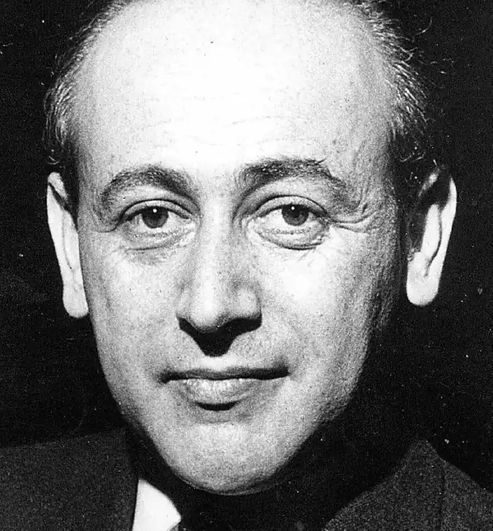
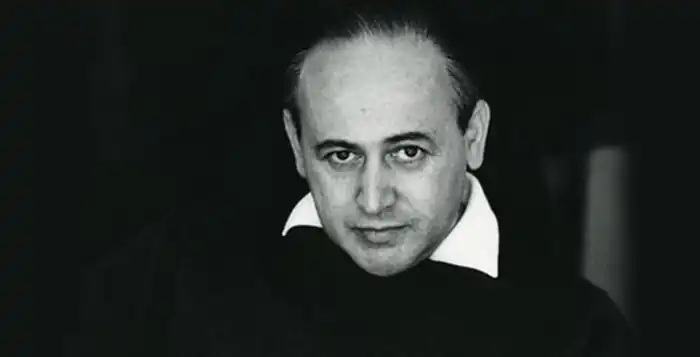
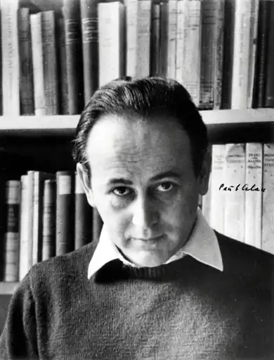

ЦЕЛАН ПАУЛЬ
(1920-1970)
Пауль Целан (справжнє прізвище — Анчель) — австрійський поет і перекладач — народився 23 листопада 1920 року в Чернівцях (Буковина) німецькомовним євреєм румунського підданства. Його батько був небагатим комерсантом. Маленьке місто Чернівці (до 1944 року — Черновиці) мало дуже бурхливу історію: до 1775 року воно належало Молдавському князівству, після 1775 року — Австрії, з 1918року — Румунії. Початкову освіту Целан отримує у народній школі (1926-1930), а з 1930 по 1938 роки відвідує греко-латинську гімназію. В юності поет захоплюється ідеями марксизму і анархізму. Літературні уподобання формувалися під впливом творчості Гофмансталя, Рільке. Потяг до поезії і самостійної творчості проявився дуже рано: перші вірші з'являються у 1934-1935 роках. З 1938 року Целан у Франції вивчає медицину в медичній школі міста Тур, але з початком Другої світової війни вимушений повернутися додому, де продовжує навчання у Чернівецькому університеті (займається романською філологією). З 28 червня 1940 року по 22 червня 1941 року перебував у радянському громадянстві (у 1940 році до Буковини вступають радянські війська, і Буковина приєднується до СРСР). Після встановлення радянської влади у Чернівцях поет пристосовується до нових умов життя: вивчає російську мову і працює перекладачем. Наступні три роки (1941 — 1944) Целан виживав в обстановці безупинного кошмару між життям і смертю, утратив усіх рідних, залишився живий лише завдяки чистій випадковості. У 1941 році Чернівці окуповують німецько-румунські війська, сім'я Целана потрапляє до єврейського гетто. Через деякий час батьки поета були депортовані до концтабору, звідки вони вже не повернулися. Сам Пауль Целан потрапляє до румунського трудового табору на примусові дорожні роботи, де, незважаючи на страшні умови, залишається живим. Події цих років стали трагедійною основою всієї подальшої творчості поета. Саме в роки війни Целан вдруге народжується як поет, як творча людина, яка має і хоче сказати щось дуже важливе, донести до людства ту істину, яку він збагнув у тяжкі часи воєнних випробувань. У 1944 році він повертається до Чернівців і продовжує навчання в університеті (вивчає англійську мову і літературу). Целан збирає свій перший (ще машинописний) збірник поезій, куди увійшли як воєнні, так і найкращі довоєнні вірші. Восени того ж 1944 року зібрано другий (також машинописний) збірник. Обидва збірники були віддані на прочитання відомому буковинському поету Маргулу-Шперберу, який високо поцінував перші поетичні спроби молодого поета. Ранні поезії Целана були вперше надруковані у Румунії вже після смерті поета. На початку 1945 року поет зволів не чекати милостей від нової адміністрації, перетнув радянський кордон і відновився в румунському підданстві. Він свідомо залишив зону юрисдикції радянської окупаційної влади, бо не переносив політичної плутанини, що панувала там, і занадто добре знав про зникнення колишніх австрійських громадян у підвалах СМЕРШу. Працював у видавництві "Російська книга" у Бухаресті, перекладав румунською російську прозу, писав власні вірші. Саме тут, у Бухаресті, вперше на літературній арені з'явилось ім'я Целана: у 1947 році в авангардистському журналі "Агора" надруковано три вірші, підписані новим, нікому ще не відомим прізвищем — Целан: німецьке написання свого прізвища — Antschel — Пауль переробив у псевдонім Zelan, але пізніше писав його на французький лад Celan. Повоєнна Румунія нічим не відрізнялася від повоєнної Східної Європи — хіба що традиційний антисемітизм там був трохи сильнішим. Целан робив тихий дрейф до Заходу. У 1947 році він доклав зусиль і перебрався до Австрії. Як нащадок громадян Австрії і жертва Голокосту, Целан автоматично отримав австрійське громадянство. У Відні у Целана вперше з'являються друзі й однодумці: молода літераторка Інгеборг Бахман, художник-сюрреаліст Едгар Жене, видавець журналу "План" Отто Базиль, які фінансово допомогли Целану видати його першу книгу віршів "Пісок з урн" (1948). Збірник складався з 48 віршів, в яких виявилось 18 помилок, що перекручували і спотворювали зміст (пізніше Целан увесь невеличкий тираж — 500 примірників — повністю знищує). На частині території Австрії усе ще перебували радянські війська (вони пішли звідти тільки в 1955 році), і Целан від гріха подалі у 1948 році перемістився до Парижа (де жив до кінця життя). "П'ятий пункт", що недавно гарантував смерть, тепер відкривав кордони — Європа каялася. У Парижі поет живе в домі франко-німецького поета Івана Голля і вивчає германістику та мовознавство в Сорбонні. Перші повоєнні роки ознаменувалися виходом на авансцену поезії цілого ряду чудових майстрів, що писали німецькою мовою. Це й Інгеборг Бахман, і Йоханнес Бобровськи, і Нобелівський лауреат Неллі Закс, і Марія-Луїза Кашніц, і багато інших. Важко, та й непотрібно розставляти митців за ступенями ієрархічних градацій. Але, по справедливості, не можна не віддати одного з перших місць у цьому ряду Полю Целану. У 1952 році з'являється перший збірник поезій Целана, виданий у Франції "Мак і пам'ять" — елегічний цикл, присвячений пам'яті загиблих. У цьому ж році поет одружується з художницею Жізель Лестранж. Украй зосереджений на літературній праці, Целан належав до того типу "небожителів", поетів трохи не від світу цього, про яких прийнято писати в поблажливому тоні. Чудо порятунку із самого пекла гітлерівського геноциду відступило на другий план перед тягарем пам'яті про пережите. Найбільш відомий вірш Целана — "Фуга смерті" — вражає моторошною реальністю. Присвячена темі Голокосту, "Фуга смерті" поєднує в собі кілька ліричних жанрів. Деякі його вірші стали "знаменням XX століття". І в першу чергу це стосується його "Фуги смерті". У своїй творчості Целан пройшов дивовижний шлях від класично рівного вірша до верлібру, у якому не тільки затемнюється зміст розірваних рядків, але вже починається руйнація словесної тканини. Пізні вірші Целана схожі на ребуси, імпресіоністичні і важкозрозумілі. 1955 рік знаменується двома важливими подіями в житті поета: народженням сина Еріка і виходом нової збірки поезій "Від порога до порога". Поетичне чуття і літературний смак у нього були бездоганні. З доброї волі і власного вибору Целан п'ятнадцять років віддав каторзі поетичного перекладу. Данину Франції, що пригріла його, поет віддав також літературним даром — повністю переклав німецькою Поля Валері й Артюра Рембо. Людина замкнута й нетовариська, Целан проте зазнав повною мірою літературної слави. Париж відкрив самотньому іноземцю двері у великий світ: у Німеччині йому було присуджено почесну нагороду Федерального об'єднання німецької промисловості (1957), літературну премію Вільного ганзейського міста Бремена (1958), вишу літературну нагороду Німецької академії мови та літератури — премію Георга Бюхнера (1960), реальна (Румунія) і потенційна (Ізраїль) історичні батьківщини, вшановуючи поета, розсипали всі можливі і неможливі похвали, про творчість Целана писали численні статті й монографії. У Париж, інтелектуальну і літературну столицю Європи, він переїхав винятково з творчою метою — у свідомості західних людей постійне проживання за кордоном не асоціювалося з поняттями "зрадництво" і "зрада Батьківщини". У Франції Целан жив на правах постійно проживаючого іноземця, на французьке громадянство (яке й у наші дні одержати нелегко) не претендував. Швидко здобута популярність, письменницькі та перекладацькі гонорари забезпечували йому пристойний рівень матеріального благополуччя. Інакше кажучи, кар'єра молодої людини із забутого Богом куточка карпатської землі була майже запаморочлива: живи й радій! Доля розпорядилася інакше. Потрясіння часів війни, апокаліптичний жах пережитого й повна людська самотність у світі не відпускали Целана й зрештою підкосили його. Таке відбувалося з багатьма євреями-інтелектуалами, які пережили Голокост, причому вже через багато років після війни. Тягар пережитого, начебто скинутий з пліч, не зникав — він повільно чавив і убивав випадкового втікача з зони смерті; це був свого роду "уповільнений геноцид", запізніла дія трупної отрути епохи небаченого людиновбивства. Целан не страждав психічним розладом, не "списався" у вульгарному смислі цього слова. Він просто згорів, і не зміг уже знаходити більше сил для адекватного вираження того, що переповняло його випалене серце; піднявшись із дна на вершину, він волів не починати спуск... Пізнім весняним вечором 20 квітня 1970 року Целан кінчає життя самогубством, кинувшись з паризького мосту в Сену. Остання книга віршів Целана, що вийшла посмертно, називалася пророчо — "Неминучість світла" (1970). ОСНОВНІ ТВОРИ: збірки віршів: "Пісок з урн" (1948), "Мак і пам'ять" (1952), "Від порога до порога" (1955), "Неминучість світла" (1970). ЛІТЕРАТУРА: 1. Гугнин А.А., Карельский А.В. Литература Германии // Зарубежная литература XX века / Под ред. Л.Г. Андреева.— М., 2000 (с. 421-464.); 2. Немецкая литература после 1945 года// Зарубежная литература XX века / Под ред. В.М.Толмачева.— М,, 2003.— С. 503-538.